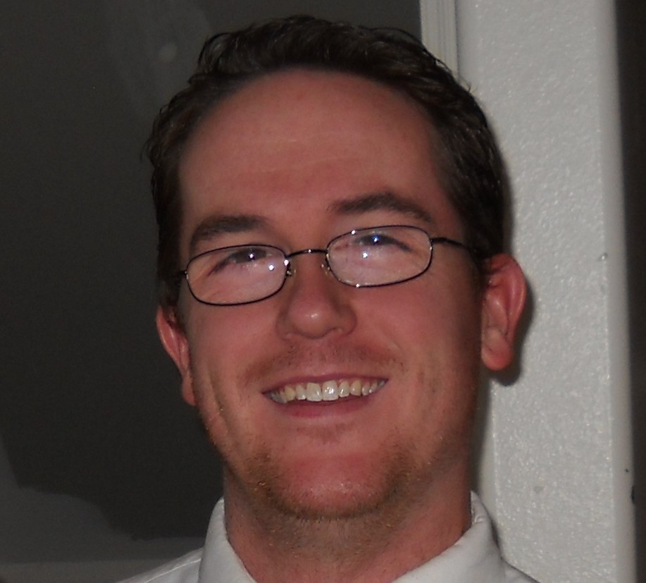

Hi! My name is Brandon O'Very (that's pronounced Oh-Very, not ovary!). blah blah blah blah blah blah blah 
I was born in Nampa, Idaho, the fifth of six (living) children. Nampa was great - I fought with my next-older sister; I hung out with my little brother, who is two years younger than me; and we spent most of our time doing things we weren't supposed to be doing - swimming in the canal our parents forbade us to go near, playing in the park without supervision (and occasionally mooning the neighbors), lighting fires in the school dumpsters, breaking windows - normal boy stuff.

When I was 9, we started moving around - first to Moscow, ID for a year, then to Baker City, OR for two years, and finally to Spokane, WA, when I was twelve. We stayed in Spokane